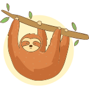
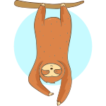

Sloths are kinda awesome
They are complex, mysterious animals that have an evolutionary history so weird that you might accuse us of making it up.
Learn moreSome incredible facts about sloths.

Sloths are three times stronger than us

They poop a third of their body weight in one go
They can starve to death on a full stomach
Without sloths there would be no avocados
“My absolute favourite piece of information is the fact that young sloths are so inept that they frequently grab their own arms and legs instead of tree limbs, and fall out of trees.”
Get involved!
Together, we have the chance to really make a difference!